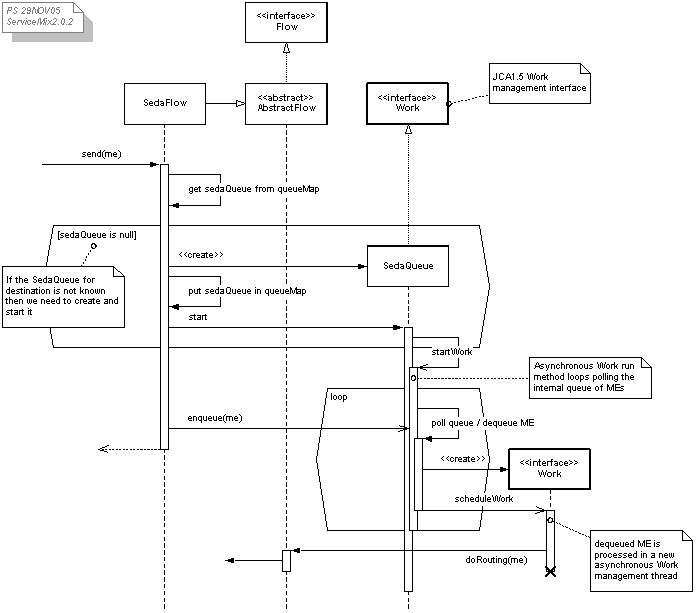
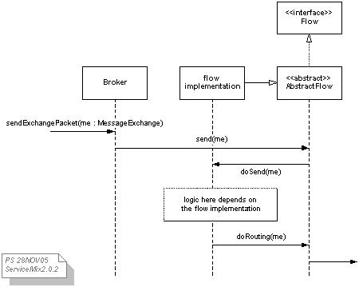
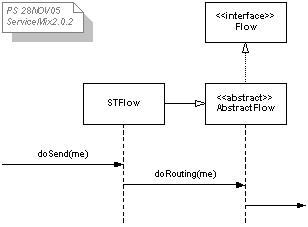
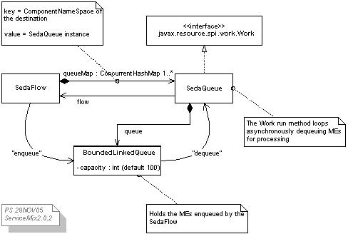
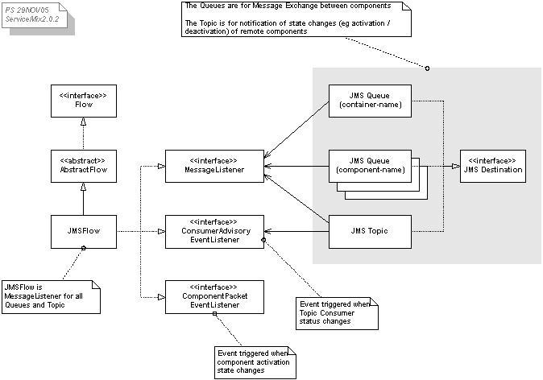
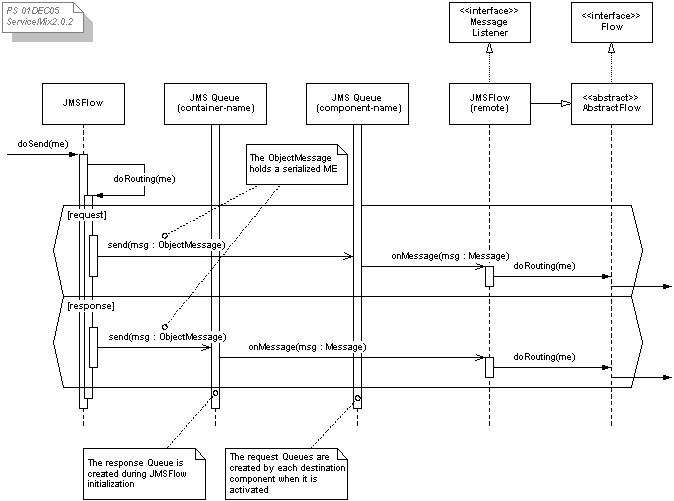

Documentation Overview
The following diagrams and notes are my understanding of part of the ServiceMix architecture based on a study of the source code
– PS
 |
ServiceMix code is evolving faster than I can keep up with it so some of the information in this document may be already be out-of-date. Diagram comments indicate what version of the code was studied. |
Contents
NMR Flow types
The flow type determines the mechanism by which the Normalized Message Router (NMR) Broker sends messages from one BC/SE to another.
Flow implementation classes

- JBIContainer "flowName" attribute determines the flow type used
- There is only 1 flow per Broker (and 1 Broker per JBIContainer)
- Flow name/class mappings are in the ServiceMix JAR. See META-INF/services/org/servicemix/jbi/nmr/flow
- There are a number of flow implementations as shown in the following table
| Flow Name |
Flow implementation Class |
| st |
org.servicemix.jbi.nmr.flow.st.STFlow |
| seda |
org.servicemix.jbi.nmr.flow.seda.SedaFlow |
| cluster |
org.servicemix.jbi.nmr.flow.jms.JMSFlow |
| jms |
org.servicemix.jbi.nmr.flow.jms.JMSFlow |
| jca |
org.servicemix.jbi.nmr.flow.jca.JCAFlow |
 |
The 'cluster' flow (present in ServiceMix version 1.x) is now just a synonym for 'jms' flow type |
goto top
Broker send sequence diagram

- The NMR Broker calls sendExchangePacket to deliver a message
- The flow implementation of abstract doSend Method determines how the message sending mechanism works
goto top
STFlow
STFlow = "Straight Through" Flow. This is the simplest mechanism.
There is no staging or buffering.
sequence diagram

goto top
SedaFlow
SEDA = "Staged Event Driven Architecture" Flow.
SEDA decomposes a complex, event-driven application into a set of stages connected by queues.
SedaFlow / SedaQueue classes

- There is 1 SedaFlow instance and a number of SedaQueue instances (1 per component)
- The SedaFlow "enqueues" an ME to send a message
- The SedaQueue instance "dequeues" the ME and processes it
- Each SedaQueue holds a concurrent HashMap of MessageExchanges (MEs) to the component. Enqueue/Dequeue is simply put/get of this HashMap
goto top
sequence diagram
- SedaQueue instances are lazily created as needed and referenced in a queueMap
- Each SedaQueue instance runs as JCA1.5 asynchronous Work thread polling the HashMap at fixed intervals
- Having enqueued the ME, the SedaFlow doSend Method may return
- When the SedaQueue Worker (run Method) finds (dequeues) an ME, it processes it in another JCA Worker thread created solely for that purpose
goto top
JMSFlow
Uses JMS for message routing among a network of remote containers.
|
"remote" just means separate. In fact, it makes no difference if the JMSFlow containers are on the same or separate machines. |
JMSFlow classes and JMS Destinations

- There is one single Topic across all containers.
- This Topic is created during JMSFlow init.
- A ConsumerAdvisor configured for this Topic allows container to be "aware" of each other.
- Special messages sent to this Topic broadcasting awareness of your components to other containers in the network.
- There is one Queue per container.
- This is created during JMSFlow init.
- This Queue is for sending response MEs to.
- There is one Queue per unique destination component.
- This is created when a component is activated.
- These Queues is for sending request MEs to.
- Outbound (request) messages get routed to a Queue for a named component (so are load balanced) and responses get sent back to the Queue for the originating container.
- The JMSFlow is a JMS MessageListener (ie it implements onMessage Method) for the Topic and all Queues
- The JMSFlow is also an ActiveMQ ConsumerAdvisoryEventListener for the Topic.
- This means all JMSFlow instances will be aware of remote container startup/shutdown
 | JMS provider requirements
This JMSFlow implementation relies on an ActiveMQ JMS 1.1 provider because it uses some non standard JMS features such as the ConsumerAdvisor and dynamic Topic/Queue creation, as well as some JMS 1.1 features. |
goto top
Notification of remote component state changes

- The diagram shows a "local" and "remote" JMSFlow instance for clarity although they may be the same instance
- A container needs to be made aware when the state of a remote container's components changes.
- JMSFlow uses an ActiveMQ ConsumerAdvisoryEvent to detect a change in status of a remote Consumer of the Topic
- If remote Topic Consumer is activated - eg container started - information of all (local) components are re-broadcast to the Topic so the new container can learn about them
- If remote Topic Consumer is deactivated - eg container shutdown - all (local) knowledge of the remote container's components is removed
- Conversely, a remote container needs to be made aware if there is some state change with any component of the local container.
- The JMSFlow instance is a JMS MessageListener on the Topic
- If a component state changes, a ComponentPacketEvent (which container component state information) is serialized and sent as a JMS ObjectMessage to the Topic.
- All remote JMSFlows receive this message and adjust their knowledge of our component accordingly
- If the component is becoming activated, then a Queue is created (for remote containers to send request MEs to)
goto top
JMSFlow send ME sequence diagram

- The diagram shows a "local" and "remote" JMSFLow instance for clarity although they may be the same instance
- The ME is serialized and sent as a JMS ObjectMessage
- Requests are sent to a component Queue on some remote container
- Responses are sent back to the container Queue of the conatiner that originated the request (because the sender may have done a synchronous send and is awaiting a response)
- The JMSFlow instance is a MessageListener for both Queues
- When the MessageListener's onMessage is triggered, the ObjectMessage content is deserialized. If the deserialized Object is a ME then it is routed to the appropriate component.
goto top
JCAFlow
The JCAFlow uses a JCA1.5 inbound resource adapters for message routing among a network of remote containers.
The resource adapters encapsulate JMS functionality.
| Similarities to JMSFlow
The logic of JCAFlow and JMSFlow seems basically the same.
Like JMSFlow, the JCA resource adapters are hardwired to use ActiveMQ (JMS).
The main difference between the JCAFlow and JMSFlow is that in the jca flow, message may be delivered concurrently within an XA transaction. |
goto top
[END OF DOCUMENT]